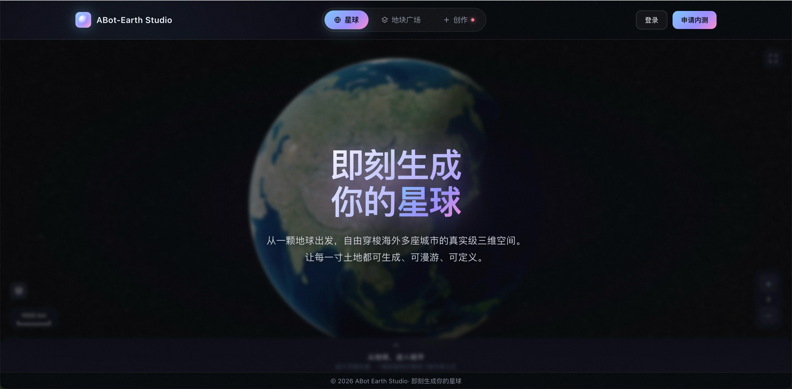
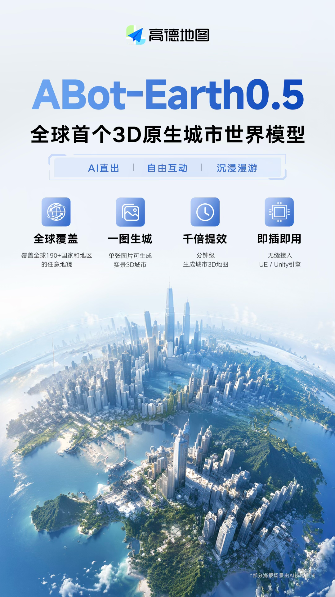

官方3D 原生
直接面向 3D 数据训练
核心不是把 2D 图像蒸馏成 3D，而是直接建立对三维空间的原生理解，再端到端生成 3DGS 城市场景。
- 训练数据直接面向 3DGS
- 减少 2D 蒸馏损失
- 生成结果更一致
高德把“航拍采集 → 点云处理 → 机器拼接 → 人工精修”的手工作坊，改写成“卫星图 / 文本 → 3DGS → 消费级 GPU → 引擎接入”的生成管线。用户一句话或一张图，10 分钟左右就能得到公里级 3D 城市场景。
从官方表述、媒体翻译到技术报告，最稳定的一条线是：3D 原生训练 + 3DGS 输出 + 滑窗连续生成，把原本依赖航拍、拼接与人工精修的流程压缩到分钟级。
官方首页把产品讲得很直白：从一个地球出发，生成、漫游、定制真实级三维空间。它的视觉策略和产品定位都很一致。


核心不是把 2D 图像蒸馏成 3D，而是直接建立对三维空间的原生理解，再端到端生成 3DGS 城市场景。
用户不再只是查地图，而是把地图作为空间生产系统：输入、生成、漫游、编辑、再导入引擎。
游戏、影视、虚拟城市、低空、机器人训练，很多原本要靠长期建模与人工修正的环节，被压到分钟级。
主视觉就是一颗“你可以生成的星球”，按钮入口直接写着登录 / 申请内测，说明它不是概念海报而是可进入的平台。
官方海报把卖点压成四件事：全球覆盖、单图生成、分钟级提效、UE / Unity 接入，读起来就是产品能力矩阵。
卫星图像 / 文字描述 → 3D 原生理解 → 3DGS 压缩-生成框架 → 滑窗推理 / 重叠融合 → 公里级连续城市场景 → UE / Unity / 仿真训练 / 交互开发
把数百万基元的真实场景压进紧凑隐空间，再从中生出新场景。
解决 3DGS 无序性，让大体量 3D 数据可以被模型“阅读”。
公里级广域连续构建，不靠一次性硬算整张大图。
分块生成、智能融合，保证连续性和空间一致性。
弥合卫星影像与训练数据之间的域差异。
让卫星图也能稳定转成真实可用的三维结构。
远景和近景都有景深，场景不会只剩粗糙轮廓。
让输出具备可漫游、可交互、可进一步编辑的基础。
把训练场景的构建时间压缩到分钟级，填补开放环境训练数据空白。
通过卫星影像快速生成对应区域 3D 地形，补足传统测绘盲区。
把城市 3D 场景从建模师手工制作变成 AI 直出，创意资源从建模转向内容本身。
用户会自然想到熟悉街区重建、城市漫游、沉浸式旅游等体验，但这些更像能力延展，不要写成已全部落地。
直接以 3D 数据训练，输出 3DGS 格式场景，面向工程可用而不是只做概念演示。
一句话或一张图，就能在消费级 GPU 上生成公里级 3D 城市场景，效率被放大到“看起来像未来”。
它强在生成管线，不代表每一块地、每一种细节、每一个行业都已经无缝适配。
现在最合理的读法是“可试跑、可验证、可接入”，而不是“已经把全球世界模型彻底做完”。
真正值得抓住的是：高德把地图从查询界面推向生成式世界引擎；而游戏、影视、虚拟城市、数字旅游这些想象，才是这条能力线的自然延展。
如果你的任务是把城市空间、引擎接入、训练场景和演示流打通，这条线很有价值。
它是一个强大的 3D 城市生成底座，但边界、数据密度、区域覆盖和后续编辑链路都仍然重要。
以前地图帮你理解现实世界，现在它开始帮你重建一个现实世界；这就是这次最强的传播点。
Published information card · ABot-Earth0.5 · theme: infocard-mcp-forge-style